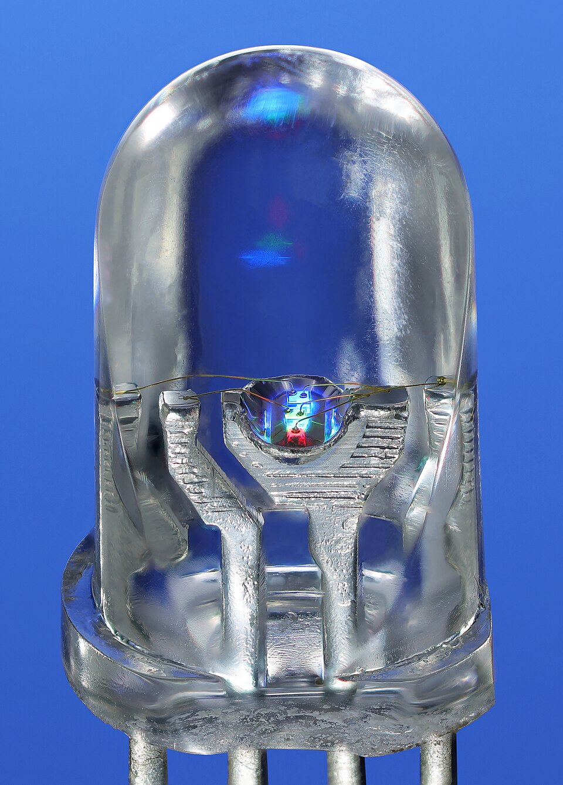

Sesión 9
Colores locos 🌈
Tu Arduino ya siente el calor y te lo cuenta.
Hoy aprende a pintar con luz: un solo LED que puede ser de cualquier color.
Antes de partir
Lo que ya sabemos 🧠
🌡️ Sesión 8: el termómetro
- El DHT11 es un sensor de temperatura y humedad; viene con librería
else if: la pregunta encadenadafloat: cajita para números con coma, como 21.5- Un umbral es la raya que decide qué hacer
🧰 De antes, para hoy
- El LED: actuador de luz, con su resistencia de 220 Ω (sesión 3)
for para contar de a uno (sesión 6)analogRead y map: traducir rangos (sesión 6)- El murciélago mide distancia (sesión 7)
Hoy pintamos con luz: un solo LED… de cualquier color 🌈
El actuador de hoy
El LED RGB: tres LEDs en uno 🔴🟢🔵

Se ve blanco… ¡hasta que lo prendes! Foto: Mister rf · CC BY-SA 4.0
- Adentro viven tres LEDs chiquitos: uno Rojo, uno Green (verde) y uno Blue (azul). Por eso «RGB».
- Tiene cuatro patitas: una por color… y una − que comparten los tres.
- Si prendes los tres a la vez se mezclan y ves un solo color. ¡Así funcionan las pantallas!
El de tu kit viene en un módulo: una plaquita con las patitas marcadas R G B − y las resistencias ya puestas. Cero resistencias que armar. 😎
Pintar con luz
La receta de cada color 🎨
Una idea nueva de programación
Medio encendido: analogWrite ✨
digitalWrite solo sabe prendido o apagado. Para un LED «a medias» el cerebrito hace trampa: lo prende y apaga tan rápido que tu ojo ve un promedio.
Solo los pines con ~ saben hacer este truco (3, 5, 6, 9, 10 y 11). Se llama PWM.
Una idea nueva de programación
Inventa tu propia orden: la función 🪄
color.ino
1void color(int r, int g, int b) {
2 analogWrite(3, r); // rojo
3 analogWrite(5, g); // verde
4 analogWrite(6, b); // azul
5}
void
no devuelve nada
color
el nombre que inventaste
(int r, int g, int b)
lo que le entregas
¡Manos a la obra!
Los cuatro cables del LED RGB 🔌
Práctica 1
La respiración 🫁
respiracion.ino
1void loop() {
2 for (int b = 0; b <= 255; b++) { // inhala
3 analogWrite(3, b);
4 delay(5);
5 }
6 for (int b = 255; b >= 0; b--) { // exhala
7 analogWrite(3, b);
8 delay(5);
9 }
10}
Fíjate en el b--: es el hermano de a++, pero resta uno. Programa completo: sketches/sesion-09/respiracion.
Práctica 2
La rueda de colores con la perilla 🎛️🌈
rueda_perilla.ino
1void loop() {
2 int pos = analogRead(A0) / 4; // de 0-1023 a 0-255
3 rueda(pos); // ¡nuestra orden!
4}
rueda(pos) es otra función inventada: recibe un número del 0 al 255 y elige el color del arcoíris que le toca.
Gira la perilla despacio: el LED recorre todo el arcoíris. Programa completo: sketches/sesion-09/rueda_perilla.
⭐ Proyecto de la sesión
La lámpara de humor 🪔
Saca la perilla y pon al murciélago: la lámpara cambia de color según lo cerca que esté tu mano.
Armar el LED RGB y el HC-SR04 en la protoboard
Subir el programa: la distancia manda a la rueda
Probar: mano pegada = rojo 🔴, a medio camino = verde 🟢, lejos = azul 🔵
Decorar: tápalo con un vaso plástico o papel blanco para que la luz se esparza 🥤
El papel o el vaso es el difusor: el mismo truco de las lámparas de verdad para que no se vea el puntito del LED.
⭐ Reto de la sesión
Elige tu aventura 🎯
- Nivel 1: la lámpara respira en tu color favorito (el
for de la práctica 1, con tu receta)
- Nivel 2: modo fiesta 🎉 — cada medio segundo un color al azar:
color(random(256), random(256), random(256));
- Nivel experto: el arcoíris automático — que
pos suba solito con pos++ y vuelva a 0 al pasar de 255
Demo del profe: un aro de LEDs donde cada lucecita es un LED RGB con su propio cerebrito.
Duelo de cerebritos
¿Cuánto aprendiste? Toca para voltear
¿Qué tres colores viven dentro del LED RGB?
Rojo, verde y azul: Red, Green, Blue 🔴🟢🔵
¿Qué hace analogWrite(3, 128)?
Prende el pin 3 «a la mitad»: lo prende y apaga rapidísimo ✨
¿Rojo + verde, con luz?
¡Amarillo! La luz se suma, no se ensucia como la témpera 💛
¿Para qué inventar una función como color()?
Para escribir las líneas una vez y usarlas mil veces 🪄
¿Qué números acepta analogWrite?
Del 0 (apagado) al 255 (a todo) 🔢
Lo lograste
¡Tu Arduino pinta con luz! 🎉
Hoy mezclaste colores, inventaste tus propias órdenes…
y tu pieza tiene una lámpara de humor hecha por ti. 🪔
Próxima sesión 🚂
El gran proyecto final: un paso a nivel de tren con luces, alarma y barrera. ¡Todo lo que aprendiste, junto!